Created: 08/23/2013
By: Glorm
Demo: http://www.glorm.com/themes/strand
Thank you for purchasing my theme. If you have any questions that are beyond the scope of this help file, please feel free to email via my user page contact form here. Thanks so much!
This theme is built on Twitter Bootstrap and is responsive. Two HTML templates are provided to show different ways to build sections.
The homepage features your messagings in a slider. Here's HTML code.
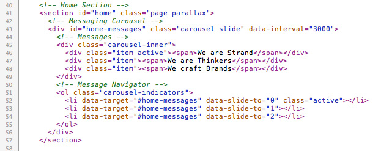
You can vary the slider timing through data-interval tag. See line 43.
You can have a clean version with only the slider by adding plain class to the home section, or have parallax background image by adding parallax class. You can add background image in the "main.css".
"About" and "Team" shows examples of simple page sections with text. You create a section by adding class page. If you'd like to have parallax background, you can add class parallax and add the background image for the section in the "main.css".
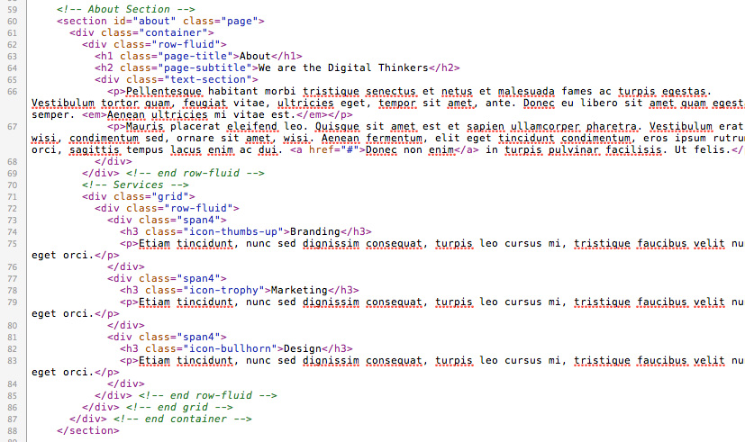
You can examples of smaller sections between pages - such as Twitter feed, client listing and testimonials. You can create these sections by adding class subsection. You can add parallax in the same way.
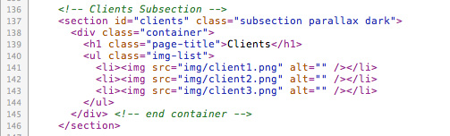
By default, the sections are white and black. However, you can also use class dark (example: About section in "style2.html") and color-highlight (example: Team section) to use different color schemes. Feel free to add your own. You simply have to add background and text colors to your new CSS class.
HTML file "style1.html" shows smaller gallery for your featured work.
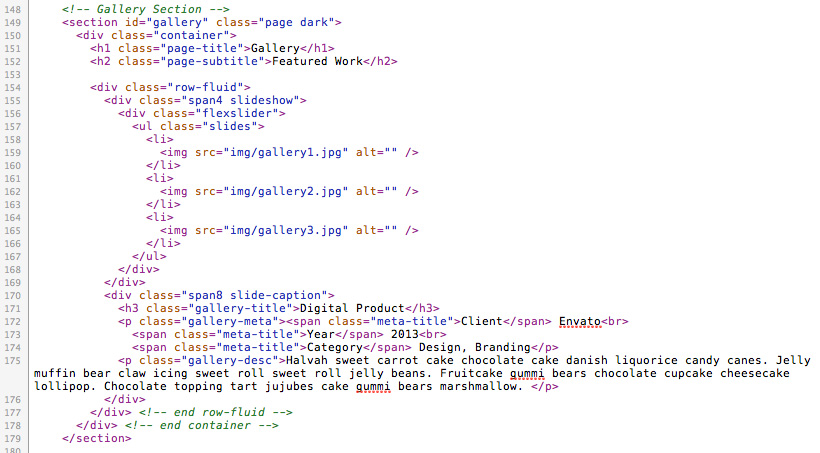
HTML file "style1.html" shows full-width gallery for your featured work.
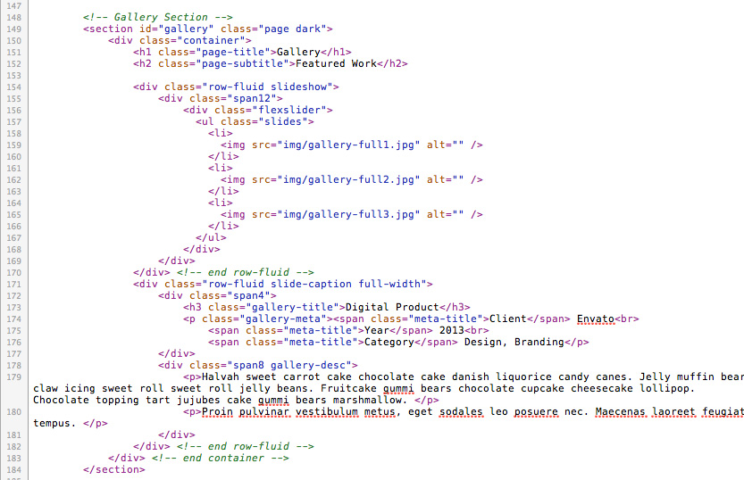
Each thumbnail links to your full-sized portfolio piece image. Don't forget to put the title of your work inside title attribute in the link. (See line 206 for example.)
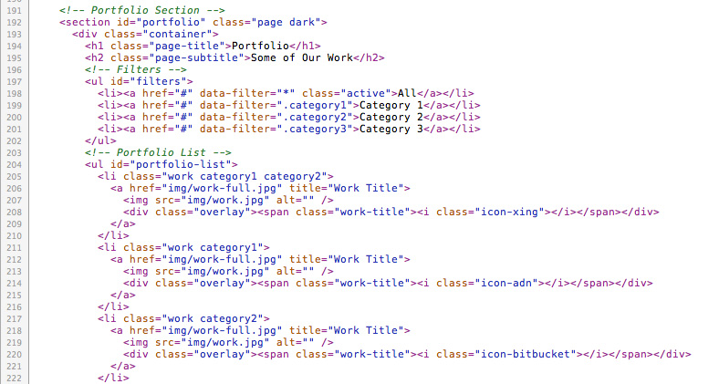
In order to use the filtering, replace the category name inside data-filter attribute with real class name. See line 198 - 201. Make sure the class name matches the one for the work thumbnails. See line 205 for example. Do not delete the class name "work", as that's how the filtering selects the project thumbnail.
HTML file "style1.html" shows portfolio example with circular thumbnails and overlays shown when you hover over the thumbnail.
Currently, the overlays have icons created with Font Awesome, but you can also put any image (such as client logo) or text.
HTML file "style2.html" shows portfolio example with rectangular thumbnails with overlays already shown over the thumbnails. Simply add class rectangular to #portfolio-list for rectangular thumbnails, or add overlays to have the overlays over the thumbnails. See line 209 below.
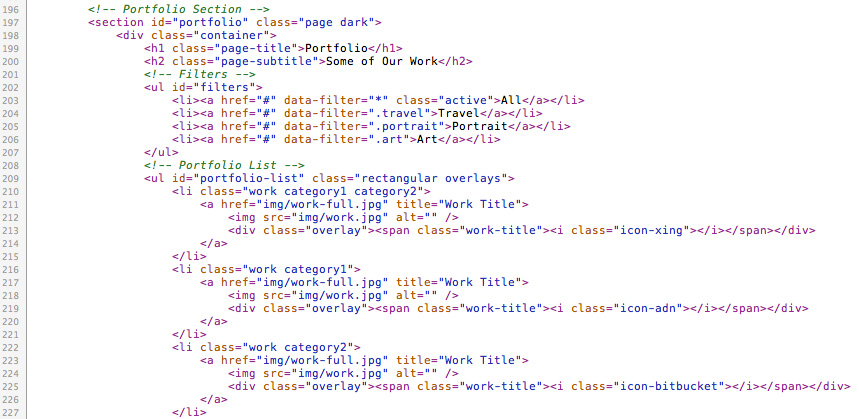
You can also customize overlay colors in "main.css". See lines 714 - 723 in the CSS file.
The conatct section contains AJAX contact form and your contact info.
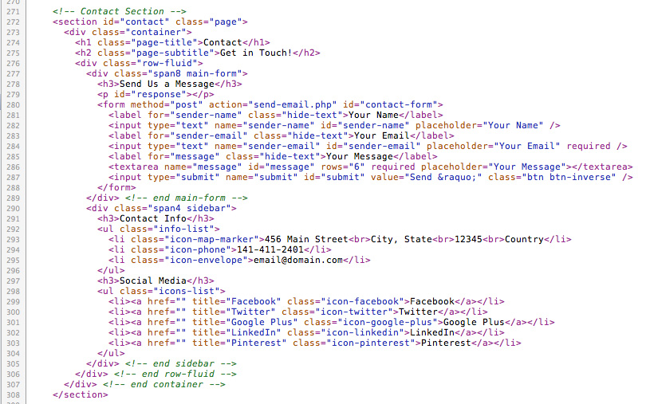
See the PHP section for using the AJAX contact form.
The anchor links in the navigation must match the id of each section.
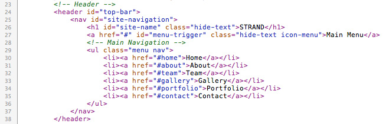
Don't forget to replace site-name with your own. (see line 26)
This theme uses four main CSS files. You can find them inside "css" directory.
icon-name tag and you can find further detailed instructions at Font Awesome.Assign an image to a parallax section through "main.css". You can find all parallax images, starting at lines 109.
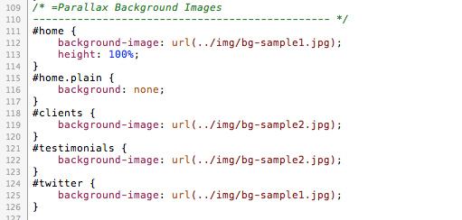
This theme imports these Javascript files. You can find them in "js" directory.
The php file "send-email.php" enables the contact form. Please replace the recipient name and email with yours to receive the visitor messages.
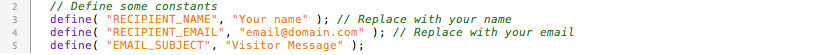
You must configure "index.php" inside "html -> twitter" directory, to enable Twitter feed. You can obtain OAuth credentials at https://dev.twitter.com/apps. You can find even further information at the plugin info page - see under "How to use".
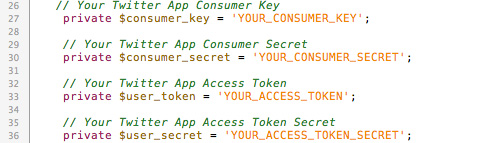
After configuring your credentials, please change your twitter handle in the HTML file. For example, see line 332 in "style1.html".
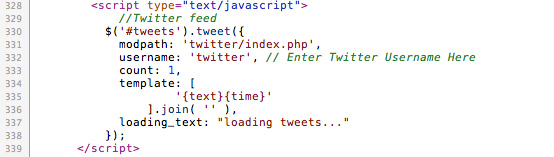
Please note images on the demo site are not included, but a sample PSD file have been provided to create background images. Check it out in PSD folder.
Once again, thank you so much for purchasing this theme. As I said at the beginning, I'd be glad to help you if you have any questions relating to this theme. No guarantees, but I'll do my best to assist. If you have a more general question relating to the themes on ThemeForest, you might consider visiting the forums and asking your question in the "Item Discussion" section. If you are happy with the theme, or the support I offer, a rating on Themeforest is really appreciated!
Glorm